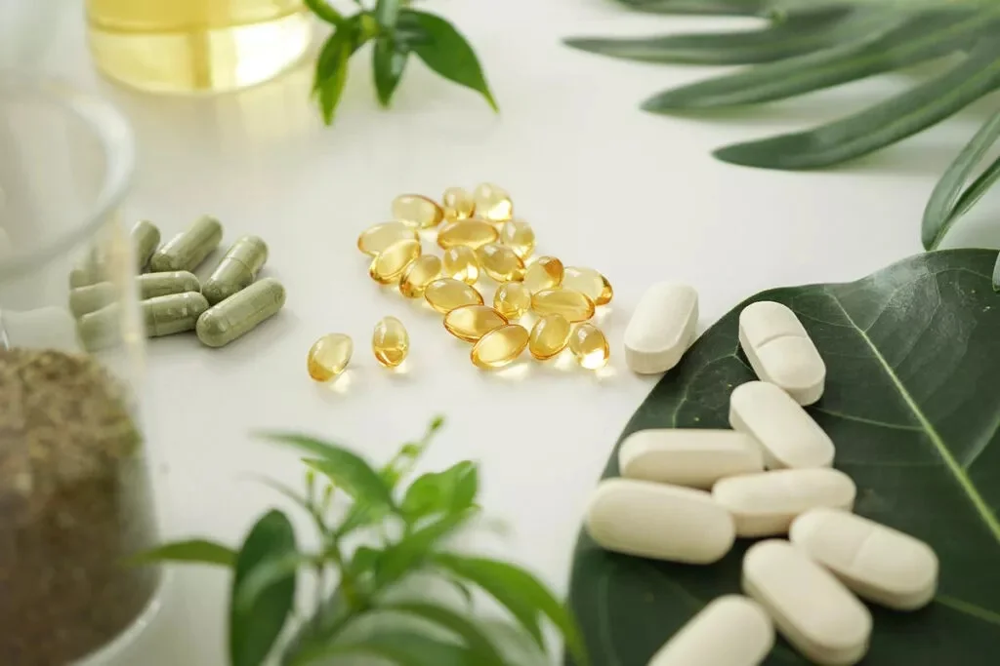
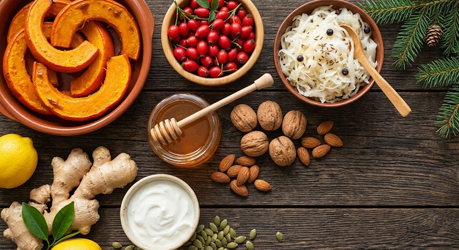
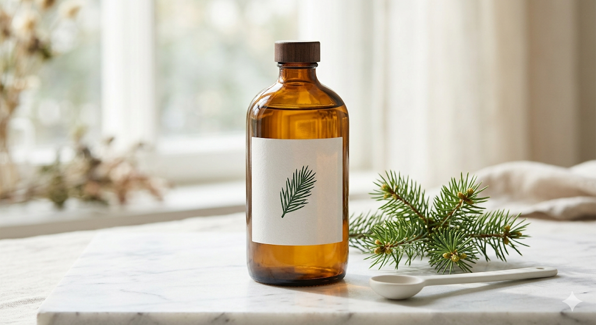
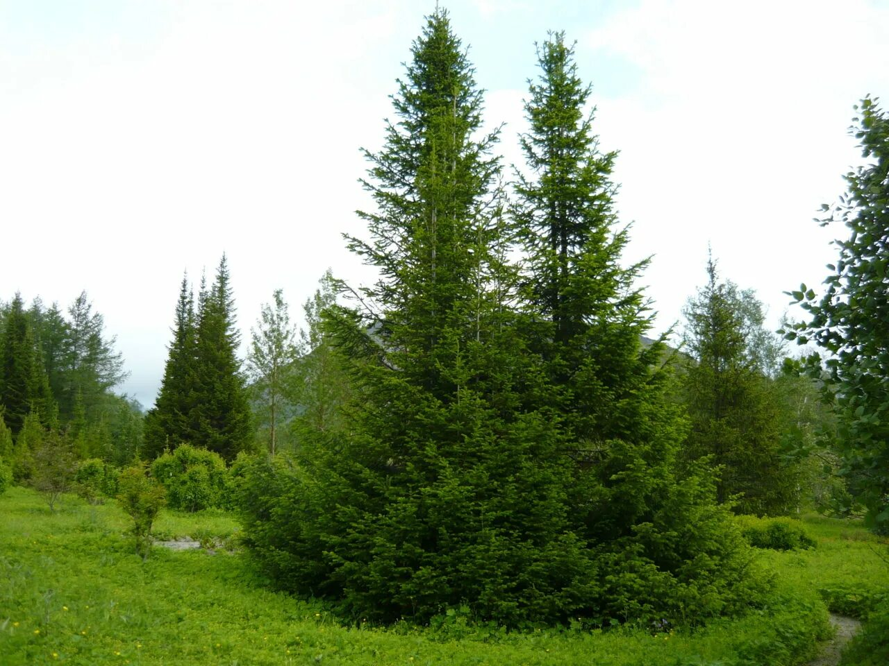
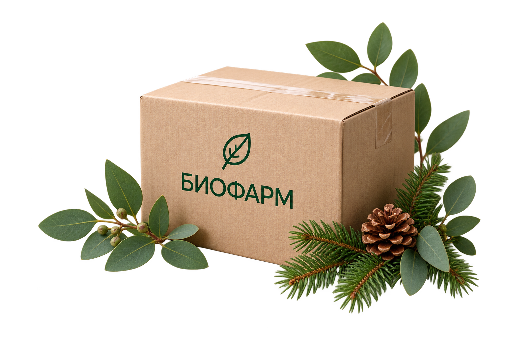

Институт изучения биологически активных веществ
Растительные экстракты и капсулы БИОФАРМ из собственной лаборатории.
С чего начнём?
Выберите удобную форму или познакомьтесь со всем ассортиментом.
Наша продукция
Натуральные продукты из собственной лаборатории.

БИОФАРМ · Наше производствоНаше производство
Мы контролируем каждый этап — от отбора и входного контроля сырья до производства, фасовки и выпуска партии. Собственная лаборатория проверяет качество и безопасность по установленным показателям, а каждая партия проходит документированную проверку.
Собственная лаборатория контроля качества
Полный цикл производства
Сертификация и документация на партии
О компании
«Биофарм» — институт изучения биологически активных веществ. Мы работаем на стыке науки и природы: изучаем компоненты растений Сибири и создаём продукты на основе природных биокомплексов, чтобы раскрывать их потенциал для поддержания здоровья.
Познакомиться с производствомОбсудить сотрудничествоДокументы
Документы, подтверждающие безопасность продукции и контроль качества БИОФАРМ.
Экстракт коры осины
Демонстрационный протокол для проверки блока сертификатов на главной и странице документов.
Открыть документЭкстракт коры осины
Демонстрационный документ для проверки раздела сертификатов.
Открыть документЭкстракт коры осины
Пример документа качества, привязанного к товару.
Открыть документПолезное
Материалы из блога БИОФАРМ.

Осенью организм сталкивается с нагрузкой сразу с нескольких сторон: меньше солнца, больше вирусов, сезонная усталость. Собрали 7 практичных способов поддержать иммунитет — от режима сна до натуральных средств на основе сибирских растений. Без мифов, с конкретными рекомендациями.
Читать статью
Абисиб — флагманский продукт Института «Биофарм», водный экстракт хвои сибирской пихты с более чем 30-летней историей. В статье: полный состав, схема приёма, противопоказания и ответы на частые вопросы. Всё, что нужно знать перед началом курса.
Читать статью
Чем полезна сибирская пихта, что входит в её состав и как применяются экстракты хвои в фитотерапии. Научный взгляд от Института Биофарм.
Читать статьюОтзывы
Где купить
Покупайте нашу продукцию на популярных маркетплейсах.
Официальный магазин
Каталог продукции БИОФАРМ
и оформление заказа на Wildberries.

Перейти на WildberriesОфициальный магазин
Каталог продукции БИОФАРМ
и оформление заказа на Ozon.
Бонусы начисляются после заказа и доступны для оплаты следующих покупок.
Скидочные коды можно применить при оформлении заказа в корзине.
При заказе от 3 000 ₽.
Сотрудничество с нами
Мы рады надежным партнерам!
Мы уверены в качестве своего продукта, поэтому смело отправляем пробную партию!
Вся продукция сертифицирована и соответствует высшим стандартам качества.
Поставка на реализацию на месяц без предоплаты: продали — оплатили — повторяем.
Не продадите — заберём товар обратно. Без оплат, комиссий и штрафов.